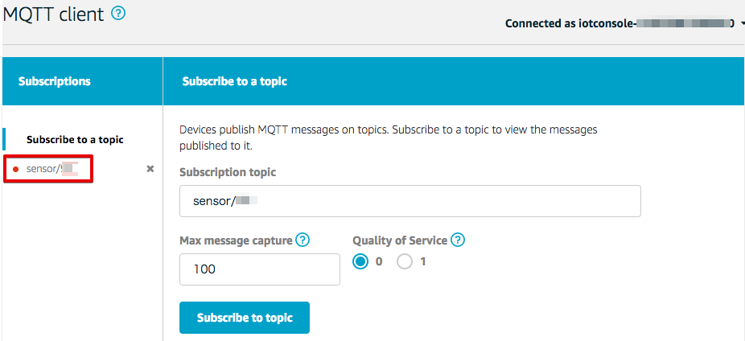

4. センサーデータの確認¶
4.1. AWS IoTでセンサーデータを確認する¶
AWSマネージメントコンソールを開き、右上のリージョン一覧から[米国東部（バージニア北部）]を選択します。

サービス一覧から[AWS IoT]をクリックして開きます。

テスト画面を表示します。メニューから[Test]をクリックすると下記の画面が表示されます。 “Subscription topic”にpublish_out-<参加者番号>を入力し、[Subscribe to topic]ボタンを押します。

AWS IoTがゲートウェイからのデータを受信できていれば、publish_out-<参加者番号>の左に、赤●が表示されます。
●publish_out-<参加者番号> をクリックすると、トピック publish_out-<参加者番号> で受信したデータが表示されます。

ゲートウェイが送信するデータは、下記の様なフォーマットになっています。
$GPRP,C02C61CB558F,AC83F3A041D2,-44,02010612FF590080BC440104FFFFFFFFFFFFFFFFFFFF,1493638145
| 項目 | 説明 |
|---|---|
| $GPRP | ヘッダー |
| C02C61CB558F | BLEセンサーのBDアドレス (Bluetooth Device Address = MACアドレス) |
| AC83F3A041D2 | ゲートウェイのBDアドレス |
| -44 | Beaconの電波強度(RSSI, dBm単位) |
| 02010612FF590080BC4D0100D8.... | BLEセンサーが送るデータ (Payload) |
| 1493638145 | ゲートウェイが付加したタイムスタンプ |
温湿度センサーが送るデータは、下記になります・
02010612FF590080BC4D0100D80A2D00000000000000
| 項目 | 説明 |
|---|---|
| 02010612FF | BLE情報 |
| 5900 | 企業コード |
| 80BC | センサーのモデル番号 |
| 4D01 | 電池電圧 (0x014D = 3.33V) |
| 00 | センサーステータス (b0:ボタン) |
| D80A | 温度 (0x0AD8 = 27.76℃) |
| 2D00 | 湿度 (0x002D = 45%) |
本ハンズオンでは、Lambda関数を使用して、データが活用が容易なJSON形式のデータに加工します。